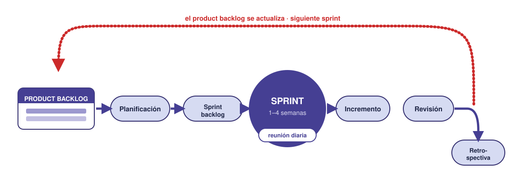
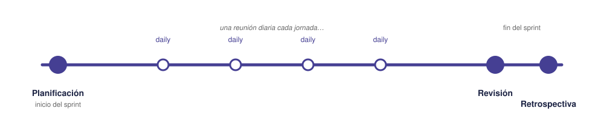
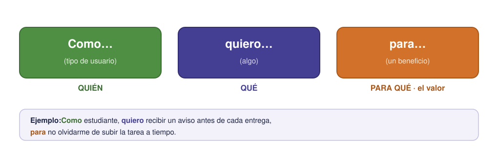

Contenido
En la sesión anterior viste quiénes forman un equipo Scrum y qué producen: el backlog, el sprint backlog y el incremento, cada uno con su compromiso. Falta la otra mitad, que es la que pone todo eso en movimiento: cuándo se reúne el equipo y cómo se escribe el trabajo para que se entienda.
Los eventos
Scrum organiza el trabajo con cuatro reuniones (eventos) alrededor del sprint. Tienen una duración acotada para no robar tiempo al trabajo real.
- Planificación del sprint (sprint planning): al empezar el sprint. El equipo elige del product backlog qué hará y forma el sprint backlog. Responde a “¿qué vamos a entregar y cómo?”.
- Reunión diaria (daily): cada día, breve (unos 15 min) y de pie. Cada miembro dice tres cosas: qué hizo, qué hará y qué le bloquea. Sirve para coordinarse y detectar problemas pronto, no para resolverlos ahí.
- Revisión (review): al terminar el sprint. El equipo enseña el incremento (lo que funciona) y recoge opiniones. Mira el producto.
- Retrospectiva (retrospective): también al terminar, después de la revisión. El equipo reflexiona sobre cómo ha trabajado: qué fue bien, qué mejorar, qué cambiar en el próximo sprint. Mira el proceso, no el producto.
Revisión ≠ retrospectiva
Es la confusión más típica. La revisión mira el producto (“¿qué hemos construido?”). La retrospectiva mira al equipo (“¿cómo nos hemos organizado y cómo lo hacemos mejor?”). Una habla de qué, la otra de cómo.
El ciclo de un sprint

Del product backlog sale, en la planificación, el sprint backlog. Durante el sprint (con una reunión diaria cada jornada) el equipo construye el incremento. Al final se hace la revisión y la retrospectiva, y lo que quede vuelve al product backlog para el siguiente ciclo.
Una línea de tiempo del sprint

El sprint empieza con la planificación y termina con revisión + retrospectiva. Entre medias, cada día arranca con una reunión diaria. Esa estructura se repite, sprint tras sprint, hasta acabar el proyecto.
Historias de usuario
¿Cómo se escriben las tareas del product backlog para que se entiendan? En Agile se usan mucho las historias de usuario: descripciones cortas del trabajo desde el punto de vista de quien lo va a usar, no desde el punto de vista técnico. La fórmula es:
Como (tipo de usuario), quiero (algo) para (conseguir un beneficio).
La gracia está en las tres partes: quién lo necesita, qué quiere y, sobre todo, para qué le sirve. Esa última parte (“para…”) obliga a pensar en el valor, no solo en la función.

Ejemplos
- Como estudiante, quiero recibir un aviso antes de cada entrega para no olvidarme de subir la tarea a tiempo.
- Como persona con movilidad reducida, quiero una rampa en la entrada para acceder al edificio sin ayuda.
- Como usuario de la app del huerto, quiero ver cuándo toca regar cada planta para que no se me sequen.
Compara la primera con escribir solo “programar avisos”: la historia de usuario explica a quién sirve y por qué, que es justo lo que ayuda a priorizar el backlog.
Ejemplo aplicado: un equipo con Scrum
Un equipo desarrolla una app sencilla para gestionar un huerto escolar. Así organizan el trabajo con Scrum.
Product backlog (priorizado, escrito como historias de usuario):
- Como hortelano, quiero anotar qué planté y cuándo para llevar el control del huerto.
- Como hortelano, quiero un aviso de riego para que no se sequen las plantas.
- Como hortelano, quiero ver fotos del avance para comparar cómo crecen.
- Como profesor, quiero un resumen semanal para evaluar el trabajo del grupo.
Sprint 1 (dos semanas). En la planificación, el equipo coge las dos historias más prioritarias (1 y 2) como sprint backlog, porque son la base. Reparten: el Product Owner (que habló con los hortelanos) aclara dudas; el Scrum Master organiza; el equipo programa. Cada día hacen su reunión diaria de 5 minutos. Al final del sprint tienen un incremento: la app ya deja anotar plantaciones y avisa del riego —funciona y se puede usar—.
En la revisión lo enseñan y un hortelano sugiere que el aviso llegue también por la mañana. En la retrospectiva el equipo nota que perdió tiempo sin repartir bien las tareas el primer día, y decide repartirlas en la propia planificación. Esa mejora y la sugerencia del aviso vuelven al product backlog para el Sprint 2.
Lo que demuestra el ejemplo
El proyecto avanzó entregando algo que funciona en cada ciclo (no esperó al final), se adaptó a lo que pidió el usuario y mejoró su forma de trabajar entre sprints. Eso es ser ágil.
Tarea del proyecto
Historias de usuario y primer sprint
TRABAJO EN EQUIPO una sola entrega por equipo
Seguid completando la fase de Scrum de la plantilla del plan de proyecto (enlace en la portada), a partir del backlog que hicisteis en la sesión anterior:
- Historias de usuario: reescribid al menos 3 ítems del backlog en formato «Como… quiero… para…». Pensad bien el para: es el que dice qué valor aporta.
- Sprint backlog: elegid lo que haríais en el primer sprint (lo más prioritario y que sienta la base).
- Objetivo del Sprint: resumid en una frase para qué sirve ese primer sprint. Si no os sale la frase, probablemente habéis metido cosas que no pintan nada juntas.
Ejercicios
Recuerda
TRABAJO INDIVIDUAL cada persona entrega el suyo
Resuelve primero en el cuaderno y luego pasa tus respuestas a tu copia de la plantilla en Drive (la que creaste desde la portada). Al terminar la unidad, descarga la plantilla en PDF (Archivo → Descargar → Documento PDF) y súbelo a la tarea Ejercicios de la unidad de Moodle. La tarea está abierta desde la primera sesión, pero no pulses «Entregar» hasta la última: es un solo documento con los ejercicios de las nueve.
- ¿Para qué sirve la retrospectiva y en qué se diferencia de la revisión?
- Escribe dos historias de usuario en formato «Como… quiero… para…» para una app que ayude a estudiar (tú eliges el tipo de usuario y la necesidad).
- Compara esta tarea escrita de dos maneras: «programar avisos» y «Como estudiante, quiero un aviso antes de cada entrega para no olvidarme de subir la tarea». ¿Qué información aporta la segunda que ayuda a priorizar el backlog?
- ¿En qué tipo de proyecto preferirías Gantt/PERT clásico y en cuál Scrum? Da un ejemplo de cada uno y razona por qué.
Lista desordenada
Ordena los cuatro eventos de un sprint tal y como ocurren en el tiempo.
- Planificación del sprint: el equipo elige qué hará y forma el sprint backlog
- Reunión diaria: cada jornada, qué hice, qué haré y qué me bloquea
- Revisión: el equipo enseña el incremento y recoge opiniones
- Retrospectiva: el equipo reflexiona sobre cómo ha trabajado y qué mejorar
Clasifica
Es la confusión más típica de Scrum. Una mira el producto; la otra, al equipo.